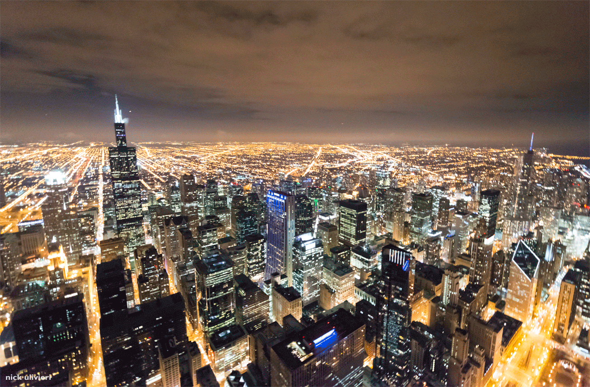

Travel
For those who yearn to explore the world, Petsby is your passport to unforgettable adventures. Our travel section is filled with inspiring travelogues, destination guides, travel tips, and recommendations to help you plan your next getaway. We understand that traveling with pets can be a unique challenge, so we also provide valuable insights into pet-friendly destinations, accommodation options, and travel essentials to ensure both you and your furry friend have a fantastic journey.
destinations
The Beautiful Niagara Falls, a pet friendly destination:
Niagara Falls is not only a marvel for human eyes but also a pet-friendly destination. Many parks and trails in the area welcome well-behaved pets on leashes, making it an excellent spot for you and your furry friend to enjoy the great outdoors together. You can take leisurely walks along the Niagara Gorge Trail or explore Queen Victoria Park while taking in the stunning views of the falls.

When the sun sets over the majestic Niagara Falls, the magic is far from over. As day transitions into night, this natural wonder transforms into a dazzling spectacle of light and color that captivates the hearts of all who witness it. Niagara Falls at night is a sight to behold, and the vibrant display of colorful lights adds a whole new dimension to its beauty.

Plan your trip
When planning your trip to Niagara Falls with your pet, be sure to research pet-friendly accommodations, restaurants, and any attractions you plan to visit. It's essential to be aware of the specific rules and regulations for pets in the area, including leash laws and waste disposal.
Chicago, the windy city's pet-friendly paradise
Chicago, often referred to as "The Windy City," is a vibrant metropolis that offers a diverse array of attractions and activities for travelers and their furry companions. From stunning parks and pet-friendly hotels to a thriving food scene and cultural landmarks, Chicago is a destination that welcomes pet lovers with open arms.

Chicago's Iconic Bean Sculpture: An Evening of Shimmering Brilliance
Chicago's iconic Bean sculpture is a sight to behold at any time of day, but it's especially breathtaking at night. The Bean's shimmering brilliance is a result of the 168 stainless steel plates that make up its surface. The sculpture's reflective surface creates an optical illusion that makes it appear as if the Bean is floating in mid-air. The Bean is a popular attraction for tourists and locals alike, and it's easy to see why. The sculpture's unique design and stunning beauty make it a must-see for anyone visiting Chicago.

New York, Central Park: a pet friendly oasis
New York City, the city that never sleeps, is a bustling metropolis with a surprising gem nestled within its urban landscape—Central Park. This iconic green oasis is not only a haven for nature lovers but also a welcoming destination for pet owners seeking adventure and tranquility in the heart of the city.

Boulder, Colorado: Where Pets and Adventure Unite
Boulder, Colorado, is a city that offers something for everyone. From outdoor adventures to cultural attractions, this vibrant city has it all. Boulder is also a pet-friendly destination, with many hotels and restaurants welcoming four-legged guests. Whether you're looking for a relaxing getaway or an action-packed adventure, Boulder is the perfect place to visit with your furry friend.

For active pets and their owners, Boulder offers an abundance of outdoor activities. From kayaking on Boulder Creek to mountain biking along the scenic trails, there's no shortage of adventure opportunities. During the winter months, nearby ski resorts offer pet-friendly accommodations and activities like snowshoeing and cross-country skiing.

Aloha, Hawaii: Paradise for Pets and Their Companions
Hawaii, the tropical paradise of the Pacific, conjures images of white sandy beaches, lush landscapes, and warm Pacific waters. But this stunning archipelago isn't just a haven for sun-seekers; it's also a welcoming destination for pets and their loving owners. With its unique blend of natural beauty, pet-friendly accommodations, and a laid-back island culture, Hawaii offers an idyllic setting for unforgettable adventures with your furry companions.

Pet-Friendly Beaches:
Hawaii's stunning coastline features pet-friendly beaches where your four-legged friend can frolic in the surf and dig in the sand. From Papohaku Beach on Molokai to the shores of Hapuna Beach on the Big Island, these beautiful beaches cater to both you and your pet's love of the ocean.

We invite you to continue exploring our world of captivating content, where the love for pets and the thrill of globetrotting come together in perfect harmony. Your next adventure awaits at Petsby – your go-to destination for all things pets and travel!